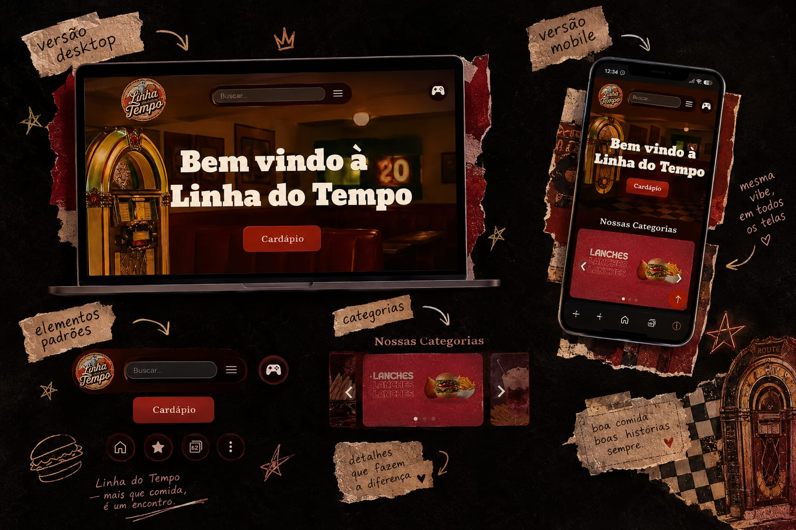

Linha do Tempo
Desenvolvimento Web - Projeto Interdisciplinar
A Linha do Tempo surgiu durante a conclusão do meu Ensino Médio no Instituto Federal de Educação, Ciência e Tecnologia do Maranhão(IFMA), a partir de um projeto para a Feira do Empreendedorismo. A proposta reunia alunos dos cursos de Informática para Internet e Administração para criar uma empresa e desenvolver sua presença digital.
O resultado foi uma empresa com uma proposta retrô, que combina alimentação, entretenimento e uma experiência inspirada em diferentes épocas. O site funciona como uma vitrine da empresa, apresentando seu cardápio e também uma Central de Jogos criada para ampliar a experiência dos visitantes.
Processo
O projeto foi desenvolvido em conjunto com integrantes dos cursos de Informática para Internet e Administração. Enquanto a parte administrativa ajudava a construir a proposta e a organização da empresa, a equipe de informática ficou responsável por transformar essa ideia em uma experiência digital.
A partir da identidade da empresa, desenvolvemos o site com uma estética retrô, criando uma página inicial, navegação por categorias, seção sobre a empresa e área de contato. Também trabalhamos na apresentação do cardápio e na integração com diferentes áreas da aplicação.
Um dos diferenciais do projeto foi a Central de Jogos. Além da função comercial do site, criamos um espaço de entretenimento com jogos desenvolvidos para fazer parte da experiência da empresa, incluindo o Delivery Dash e o Snake.
O projeto também envolveu a organização de diferentes páginas, elementos visuais, imagens, navegação e adaptação da interface para diferentes dispositivos. Foi uma experiência de aplicar conhecimentos técnicos em uma situação que simulava a criação de um produto para uma empresa real.
Ao final da Feira do Empreendedorismo, a Linha do Tempo ficou em primeiro lugar na categoria de melhor site, tornando o projeto uma das experiências mais marcantes da minha formação no IFMA.
Tecnologias
